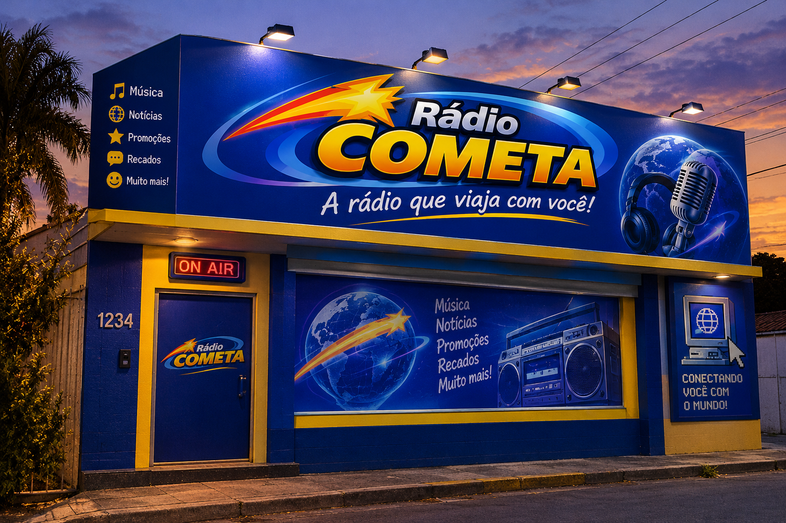

Tem uma sugestão, reclamação ou quer ser nosso parceiro? Manda pra gente!
Na época da Rádio Cometa, a internet era movida a recados e comunidades. Vem interagir com a gente:
Se preferir mandar um e-mail clássico, nosso endereço é:
(Atenção: respondemos em até 48h úteis! Não envie correntes de sorte, por favor.)
Endereço: Av. das Estrelas, 2000 — Faro/PA
Telefone: (93) 2000-0000
Horário: 24 horas no ar!
